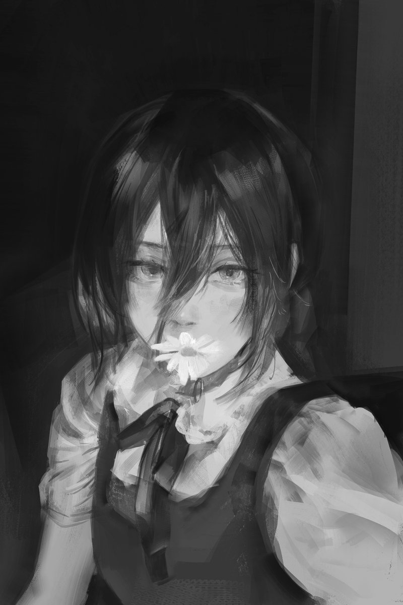

I am a Master of Engineering graduate in Power from the University of Sydney, with a solid background in Electrical Engineering, IoT, power system analysis, renewable energy, and optimization modeling. I have hands-on experience in engineering tutoring, industrial lean improvement, and full-stack project development. Proficient in Python, MATLAB, Vivado, and data-driven algorithms, I am passionate about power systems, renewable integration, EV infrastructure, and smart city solutions.
Skills
Experience
Education
Power system simulation, microgrid optimization, algorithm development.
Learn More• Renewable Energy Microgrid Investment Optimization Model
• Electric Vehicle Charging Station Location Optimization
• Smart City Hybrid Energy System Design
• First Prize, Smart City Design Competition, University of Sydney (2023)
• High-Score IoT Infrastructure Monitoring System Design (2022)
Email: 765893006@qq.com
Uni Email: ywan8535@uni.sydney.edu.au
Work Email: wangyiding@hbc.edu.cn